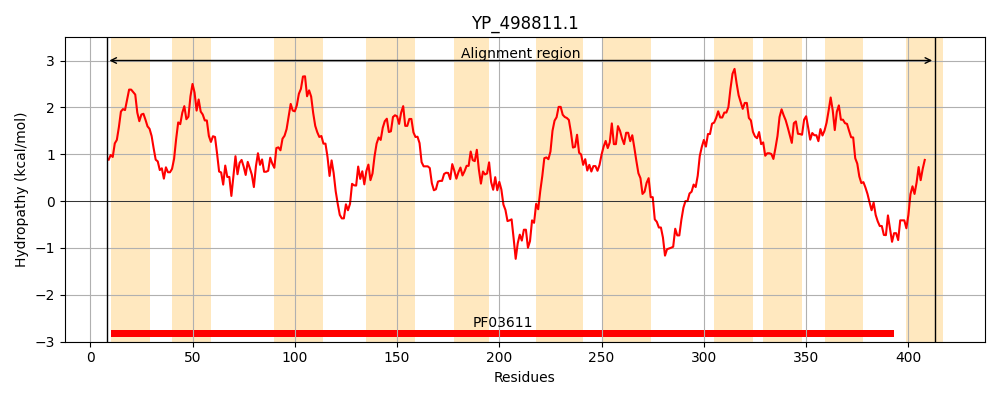
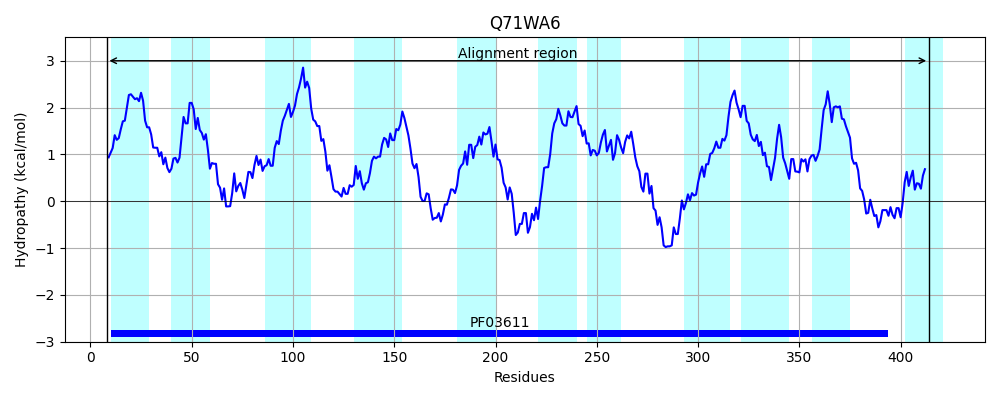
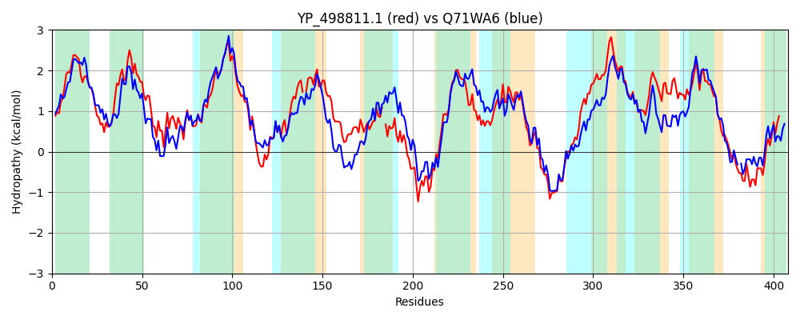

Hit Accession: Q71WA6
Hit TCID: 4.A.5.1.2
Hit Description: gnl|BL_ORD_ID|15189 gnl|TC-DB|Q71WA6|4.A.5.1.2 PTS system, galactitol-specific, IIC component OS=Listeria monocytogenes serotype 4b (strain F2365) GN=LMOf2365_2645 PE=4 SV=1
Mach Len: 408
e:0.000000
Query TMS Count : 11
Hit TMS Count: 11
TMS-Overlap Score: 9.700000
Predicted Substrates:CHEBI:10078;xylitol, CHEBI:22605;arabinitol
BLAST Alignment:
Score: 1181 , Bit scores: 459 bits, E-value: 5.8e-161, Alignment length: 408, Percentage identity: 55
Query: 8 VRGFLDLGATVILPVVIFLLGLFFRQKIGAAFRSGLTIGVAFVGIFLVIDLLVKNLGPAAQAMVKNLGVSLNVIDVGWPATSSIAWASSVAAFIIPLGIIVNVVLLVTKVTKTMNVDIWNFWHYTFTAAMVYAVSGSIWQ-ALLAAVIFQIICLKVADWTAPMMSEFFDLPGVSIATGSTISYA-PGIYLVKLLQKVPGLNKLDADPETIQKRFGAFGESIFVGLILGLGIGVLAGYKPGDIINLGMSMAAVMVLMPRMVKILMEGLMPVSESARTWLNKRFGEREIYIGLDAAVALGHPAVISTALILVPITVLLAVILPGNQVLPFGDLATIPFVVAFIVGAARGNIIHSVIVGTIMIAISLYIATDVAPIFTDMAKGTNVQMPKGSSEISSIDQGGNIVNYLIFK 413
V+ L+LG TVILP++IF + L FR A RS +TIG+ FVGI LVI LL NLGPAAQ MV+ G++L +ID GWPA ++ +WAS VAA +IP+ ++VN+ L+ KVTKT+++DIWN+WH+ A Y V+G W A+L A+I+++ L +AD T PM+ EF+ L G+S+ TGST ++ GI + L+ K+PG+ + DPETIQKRFG FGE + +GLILG+ IG+LAGY G + LGMSM AVM LMPRMVKILMEGL+P+SESAR ++ RF RE+YIGLDAA+++GHPA IST LILVPIT+ LAVI+PGN+VLPFGDLATIPF V+F+V + +GNI+HSV+ GT++IA++L +ATD + T+M KG + PKG++++S++D GGN N++I K
Sbjct: 8 VQYVLNLGPTVILPIMIFFIALIFRVPAKKALRSAITIGIGFVGINLVISLLSSNLGPAAQQMVERFGLNLTIIDAGWPAAAAASWASPVAAILIPICLVVNLALIFFKVTKTLDIDIWNYWHFIAAGATGYIVTGGNWWFAILCAIIYEVAVLWMADRTQPMVEEFYGLKGISLPTGSTAAFGFIGIPVGWLIAKIPGIKNIHVDPETIQKRFGIFGEPMMMGLILGIAIGILAGYDVGAVAQLGMSMGAVMFLMPRMVKILMEGLIPISESAREFMKSRFKGRELYIGLDAALSIGHPANISTGLILVPITLFLAVIIPGNKVLPFGDLATIPFYVSFVVASRKGNILHSVLAGTVVIALALLMATDFGLVHTEMMKGV-YEFPKGATQVSTLDMGGNFFNWVILK 414 | Protein Hydropathy Plots: |
|---|
|  |  |
Pairwise Alignment-Hydropathy Plot:
|
|---|
|  |